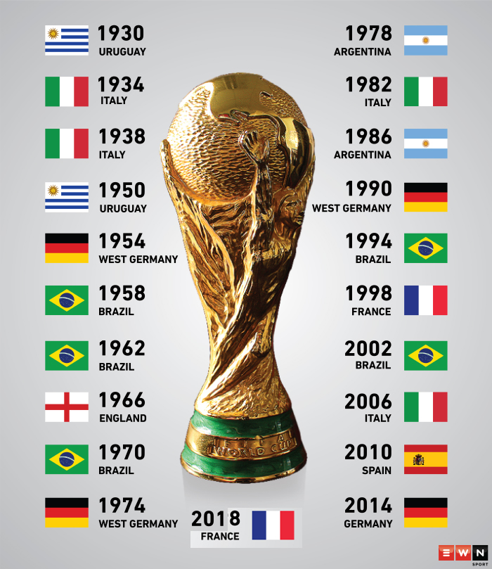

Coupe du monde

La Coupe du monde de football, ou Coupe du monde de la FIFA, est le championnat du monde des équipes nationales masculines de football. Décidée le 28 mai 1928 par la Fédération internationale de football association (FIFA)
sous l'impulsion de son président Jules Rimet, elle a été ouverte à toutes les équipes des fédérations reconnues par la FIFA, professionnelles y compris, se distinguant en cela du tournoi olympique de football, à l'époque réservé aux amateurs.
Historique
Elle a lieu pour la première fois en 1930, en Uruguay (champion olympique 1924 et 1928), et tous les quatre ans depuis (sauf en 1942 et 1946 à cause de la Seconde Guerre mondiale). Depuis la deuxième édition, en 1934, la Coupe du monde comprend une phase de qualification organisée par chaque confédération continentale, et une phase finale qui réunit les équipes qualifiées (de 16 en 1934 à 32 à partir de 1998) dans un ou plusieurs pays pendant un mois environ. Cette phase finale comprend actuellement un premier tour par poules qui qualifie seize équipes pour une phase à élimination directe à partir des huitièmes de finale. Le pays organisateur de la phase finale est désigné par la FIFA et est automatiquement qualifié. Des vingt-et-unes coupes du monde disputées jusqu'en 2018, seules huit nations en ont déjà remporté au moins une. Le Brésil, seule équipe à avoir disputé toutes les phases finales de la compétition, détient le record d'éditions remportées avec cinq succès et s'est acquis le droit de conserver le trophée Jules-Rimet avec sa 3e victoire dans la compétition en 1970, avec Pelé, seul joueur triple champion du monde. L'Italie et l'Allemagne comptent quatre trophées. L'Uruguay, vainqueur à domicile de la première édition, l'Argentine et la France ont gagné chacune deux fois la Coupe, l'Angleterre et l'Espagne une fois. La dernière édition s'est déroulée en Russie en 2018, la prochaine doit avoir lieu au Qatar en 2022. Celle de 2026, aux États-Unis, au Canada et au Mexique) sera la première édition à 48 équipes participantes.

Coupe du Monde : palmarès
Le palmarès de la Coupe du monde de football ne fait apparaître que huit pays détenteurs du trophée depuis sa création en 1930. C’est le Brésil qui détient le record de victoires dans la compétition avec 5 titres (1958, 1962, 1970, 1994 et 2002), suivi de l’Italie avec 4 victoires (1934, 1938, 1982, 2006) et de l’Allemagne (1954, 1974, 1990, 2014). L’Espagne qui a remporté sa première Coupe du monde en 2010 en Afrique du Sud. Les autres pays présents sont l’Argentine (2 fois), l’Uruguay (2 fois),la France(2 fois), l’Angleterre (1 fois). A noter que la Coupe du monde n’a pas eu lieu entre 1938 et 1950, à cause de la Seconde Guerre mondiale.
